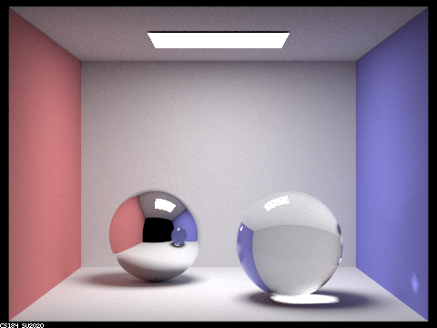

In this project, I extended the functionality from Project 3-1 to be able to render different types of materials.
Specifically, I implemented the mirror and glass materials (Part 1) and microfacet materials (Part 2).
While implementing this project, I ran into issues regarding large amounts of noise in the image renders, which was attributed to casting errors (I updated my implementation to ensure floats were being used) and mathematical mistakes.
For example, I initially did not provide safegaurd checks to ensure that my implementation avoided divisions by 0 (checking if wo and wi were valid) and I initially did not use the absolute value of the cosine value obtained.
Overall, the implementation for this project was majorly bug-free since I utilized the staff binaries from Project 3-1 when working on this project.
This project was pretty fun to implement because now the pathtracer is able to render a wide variety of scenes and materials!
In this part, I implemented mirror and glass materials by modifying the following functions according to the spec:
BSDF::reflect(...)MirrorBSDF::sample_f(...)BSDF::refract(...)RefractionBSDF::sample_f(...)GlassBSDF::sample_f(...)
The following images showcase CBspheres.dae rendered with varying max_ray_depth values.
-s 1024 -l 4 -m 0 |
-s 1024 -l 4 -m 1 |
-s 1024 -l 4 -m 2 |
-s 1024 -l 4 -m 3 |

-s 1024 -l 4 -m 4 |
-s 1024 -l 4 -m 5 |
-s 1024 -l 4 -m 100
When m = 0 the only the top light is shown in the render. Since we are only using 0 bounces, there is no light that is bouncing off the room's surfaces (walls and spheres) towards the camera.
When m = 1 the top light, walls, and ground are lit up. The spheres are still black, however, there is light glares on the top of both spheres (direct lighting bouncing on the spheres and into the camera). This behavior is expected because we are only considering 1 bounce between the light source and the camera (there is no indirect lighting being considered).
When m = 2 the top light, walls, ceiling, and ground are lit up. The back sphere's surface now appears as its expected reflective material, however, the front sphere remains largely dark with slight hints of color. This behavior is expected because we are considering 2 bounces between the light source and the camera (now indirect lighting is being considered).
This means that light will now bounce from the light source to the environment to the spheres or ceiling and finally towards the camera.
Additionally, the shadows have become softer when compared to the previous render.
When m = 3 the top light, walls, ceiling, ground, and spheres are lit up. In particular, the shadows are softer and the front sphere is brighter and showcases some refractive elements (bottom of the sphere). Now, with three bounces the reflective sphere's surface shows the colored ceiling in the reflection.
When m = 4 the top light, walls, ceiling, ground, and spheres are lit up. In particular, the shadows are softer and the front sphere is brighter and showcases some refractive elements (bottom of the sphere). Additionally, there is a new lighting effect from the front sphere on the right wall (bottom of blue wall contains refracted light).
This behavior is expected as the front sphere is represented as a glass material, which means now with more bounces, light can bounce within the sphere and then exit the sphere as well.
When m = 5 the top light, walls, ceiling, ground, and spheres are lit up. In particular, the shadows are softer and the front sphere is brighter and showcases some refractive elements (bottom of the sphere and bottom of blue wall). Overall, the render became clearer and smoother overall.
When m = 100 there is very little difference between the previous render because the contribution of reflective and refractive elements will become more negligible as the ray depth continues to increase (the main differences will plateau).
In this part, I extended the functionality from Project 3-1 to support microfacet materials. Now, various other materials can be rendered by modifying the corresponding components within the dae files in addition to the original diffuse materials from the previous project. I implemented the following functions according to the spec and referenced the link on the spec to better understand the derivations of the expression used in this part:
MicrofacetBSDF::f(...)MicrofacetBSDF::D(...)MicrofacetBSDF::F(...)MicrofacetBSDF::sample_f(...)
The following images show CBdragon_microfacet_au.dae rendered with varying α values.
-s 1024 -l 1 -m 5α = 0.005 |
-s 1024 -l 1 -m 5α = 0.05 |
-s 1024 -l 1 -m 5α = 0.25 |
-s 1024 -l 1 -m 5α = 0.5 |
Smaller values of α result in a smoother surface, whereas increasing it will create a rougher microfacet material.
As seen in the rendered images, increasing the roughness yielded a clearer, better textured, and brighter dragon.
This behavior is due to the fact that microfacet materials reflect light according to the normals of each "microfacet" on the surface.
Increasing the roughness will increase variation of the microfacet material, which creates more individual components on the surface, whereas a lower roughness value would mean less variation and less components on the surface (i.e. smoother surface).
Therefore, increasing α resulted in more variance of the material which allowed for the texture (the bumps on the dragon's neck and body) to render better and allowed for a brighter image since more individual "microfacet" surfaces will each reflect light of their own.
Overall, small α values yield glossy renders and large α yield more diffuse renders.
The following images show CBbunny_microfacet_cu.dae rendered with cosine hemisphere sampling and importance sampling.
|
CBbunny_microfacet_cu.dae -s 64 -l 1 -m 5 |
CBbunny_microfacet_cu.dae -s 64 -l 1 -m 5 |
Using cosine hemisphere sampling (this was the default implementation) resulted in a noiser and darker image, specifically the rendering of the bunny's material, when compared to the importance sampling render.
The stark difference in the two renders can be attributed to the fact that cosine hemisphere sampling makes the assumption that light is reflected uniformly, however, it is worth noting that each "microfacet" of a microfacet material will reflect light based on their normals, which is why the importance sampling render contains less noise and is not as dark on the bunny's material.
In particular, my importance sampling implementation uses the Beckmann NDF, which will accordingly define the *pdf while considering sampled normals (as discussed above) of the microfacet material.
The following images show CBdragon_microfacet rendered with varying conductor values (η and k).
I referenced https://refractiveindex.info/ to obtain valid η and k for different conductor materials.
|
CBdragon_microfacet_custom_lead.dae -s 1024 -l 1 -m 5 |
CBdragon_microfacet_custom_titanium.dae -s 1024 -l 1 -m 5 |
I used wavelengths 614 nm (red), 549 nm (green) and 466 nm (blue) when obtaining the η and k values for the custom material renders.
The η values for the lead dragon were (1.0132, 0.65850, 0.42092) and the k values were (6.2285, 5.6248, 4.6673).
The η values for the titanium dragon were (2.6640 2.5400 2.3075) and the k values were (3.7080, 3.4300, 3.0850).
Working with a partner went well. We used the same approach as the previous project, where we assigned each person to be the "lead" on certain tasks. Additionally, we continued our practice of commenting code/communicating well so that both partners would be on the same page when it comes to the implementation of the code. In terms of coding, one way that we collaborated was through paired programming. We would work on one person's monitor with that individual coding and the other partner helping by checking the specs/slides/piazza as well as helping debug. When we didn't do that we would try to split up parts of the work in a divide and conquer fashion. We split up the task of the write-up by making the individual who worked more on each part write out the explanations.
Project 3-2 Webpage
https://cal-cs184-student.github.io/sp22-project-webpages-mantejpanesar/proj3-2/index.html